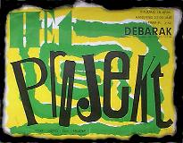

Geschiedenis

Geschiedenis

Het Projekt is in 1984 opgericht als huisband van het jongeren centrum Débarak te Zutphen.De muziekstijl is typisch jaren tachtig. Men moet dan denken aan Joy Division, The Fall en Bauhaus. Het Projekt heeft nooit de pretentie gehad om zo goed te zijn of te worden als genoemde bands. Het opnemen van elke bijeenkomst was lauter voor eigen luister plezier bedoeld. Van de oude, eerste opnamen zijn inmiddels cd's gebrand. Het geeft een mooi tijdsbeeld van de punk/wave scene in Nederland en in het bijzonder van die in Zutphen in de begin jaren tachtig. Enkele mensen die in Het Projekt hebben gespeeld zijn : (deze lijst is lang niet compleet, excuses daarvoor) Hans Kerkhof - Ed van der Mije - René Nelissen - Hans Bentum - Robin Teering - Stevan Ordelmans - Roelof (weet de achternaam helaas niet meer) - Martijn de Clerck en vele anderen, vaak éénmalig zoals het achtergrond koortje tijdens één van de eerste optredens van Het Projekt : Sanne, Marjan en Channa. Naast muziek heeft Het Projekt zich ook bezig gehouden met video en gedichten. Het multi-mediale aspect maakte hun optredens extra bijzonder.

Het laatste optreden tijdens het woutwal festival bij Débarak in 1986
Alles op deze home page valt onder het copyright van 'Het Projekt'.
Het is niet toegestaan materiaal van deze site te gebruiken zonder schriftelijke toestemming van de leden van
'Het Projekt': Hans Kerkhof, Ed v/d Mije of René Nelissen.( 8-2-2002)